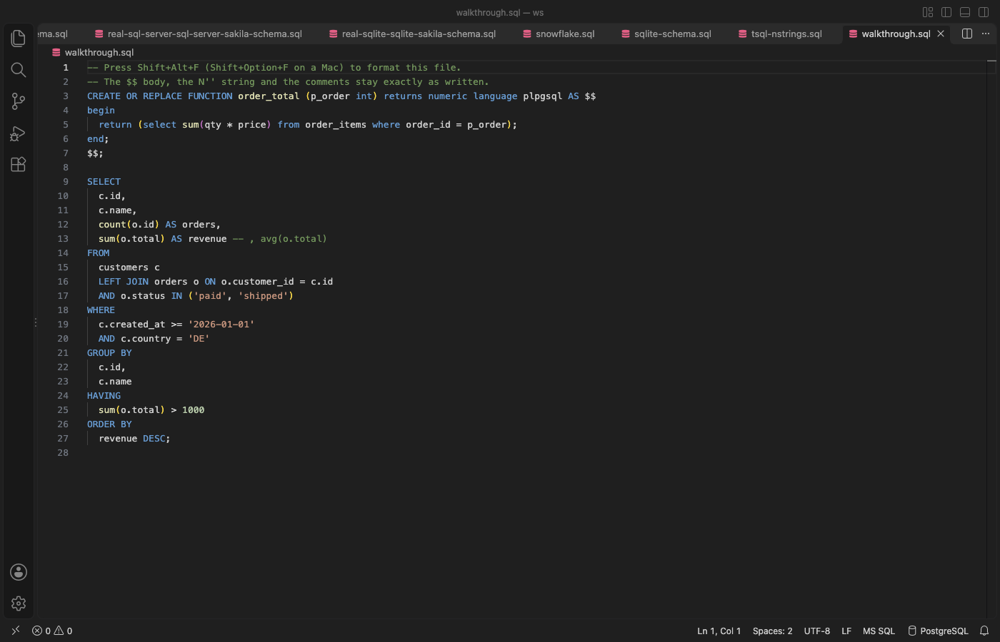

Open files in VS Code and Cursor / Code and APIs
Format SQL in VS Code
VS Code colors SQL but has no SQL formatter built in, so Format Document says there is no formatter for 'sql' files. Install the free SQL Safe Formatter by Zovo, then press Shift+Alt+F (Shift+Option+F on macOS). It picks the dialect for you (PostgreSQL, MySQL, T-SQL, PL/SQL and 16 more) and checks the result token by token. If anything other than whitespace or keyword case would change, the file stays as it is.
Free, MIT license. Extension ID zovo.zovo-sql-formatter, version 0.2.0. Needs VS Code 1.90.0 or newer.
Also free from Zovo: SQLite Editor & Viewer, VS Code Marketplace · Open VSX (Cursor, Windsurf).

Steps in VS Code
- Install SQL Safe Formatter from the Marketplace, or press Ctrl+P (Cmd+P on macOS) and run
ext install zovo.zovo-sql-formatter. - Press Shift+Alt+F (Shift+Option+F on macOS), or right-click and choose Format Document. If VS Code asks which formatter to use, pick SQL Safe Formatter.
- To format part of a file, select it and press Ctrl+K Ctrl+F (Cmd+K Cmd+F).
- To format on save, add
"[sql]": {"editor.formatOnSave": true, "editor.defaultFormatter": "zovo.zovo-sql-formatter"}to your settings. - Click the dialect in the status bar to pick another one for this file. For SQL inside a Python, JavaScript or Java string, put the cursor in the string and choose Format SQL in String.
Steps in Cursor, Windsurf or VSCodium
- Open the Extensions view with Ctrl+Shift+X (Cmd+Shift+X on macOS).
- Search for
zovo.zovo-sql-formatterand click Install. Cursor, Windsurf and VSCodium install from Open VSX, where it is published aszovo/zovo-sql-formatter. - If your editor has no gallery, download the .vsix from the Open VSX page and run "Extensions: Install from VSIX...".
- Then use it the same way as in VS Code.
What SQL Safe Formatter handles
- 20 dialects: PostgreSQL, MySQL, MariaDB, T-SQL, Oracle PL/SQL, SQLite, BigQuery, Snowflake, Redshift, Spark, Hive, Db2, DuckDB, Trino, ClickHouse and more.
- It keeps
$$and$BODY$bodies,DELIMITER $$blocks,N'...'strings,[names with spaces], commented-out code,GOlines and psql commands. - Stored procedures, functions, triggers and package bodies are indented by block.
- A 5 MB script formatted in 3.5 to 6 seconds in the release tests, in a worker thread with a Cancel button.
- Settings for keyword case, leading or trailing commas, line width and indent style.
What it does not do
- If the SQL cannot be read in the chosen dialect, or the result would change a token, the file is not formatted. A message names the line, and Format the Rest formats the statements it can read.
- Files over 16 MB are not formatted as a whole (a setting).
- It only formats. It does not lint, run queries or check names against a database.
In JetBrains IDEs (IntelliJ IDEA, PyCharm, WebStorm, CLion and others)
- Built in: Reformat Code. DataGrip and JetBrains IDEs with the database tools format SQL with Code, Reformat Code, using the SQL code style in Settings. Zovo has no JetBrains plugin for this.
- SQL Formatter. 77,301 downloads. Its listing says: "JetBrains IDE plugin for viewing formatted SQL text on tool window."
Other options
- Prettier SQL VSCode (
inferrinizzard.prettier-sql-vscode, 3.7 million installs, not on Open VSX). Its own description: "VSCode Extension to format SQL files". The most installed SQL formatter. Not on Open VSX. - SQL Formatter (
adpyke.vscode-sql-formatter, 2 million installs, not on Open VSX). Its own description: "Format sql files using the sql-formatter npm package". Not on Open VSX. - SQL Formatter VSCode (
ReneSaarsoo.sql-formatter-vsc, 105,746 installs, on Open VSX). Its own description: "Official VSCode Extension of SQL Formatter library".
Install counts and Open VSX status were checked on 9 November 2026. Descriptions in quotes are the extensions' own.
Questions
Why does VS Code say there is no formatter for SQL files?
VS Code has syntax colors for SQL but no SQL formatter. Install one, and Format Document works.
Will it break my PostgreSQL functions?
No. $$, $tag$ and $BODY$ bodies are kept byte for byte, and every result is compared token by token with your SQL before it is applied. If a token would change, the file is left as it was.
What does it use inside?
The open source sql-formatter library (MIT) formats plain statements. The token check, the dialect detection, the procedure layout and the handling of client lines such as GO and DELIMITER are its own.
More about SQL Safe Formatter
Read the SQL Safe Formatter page for every feature and setting, or the source code on GitHub.
Related guides
- SQLite Editor & Viewer on the VS Code Marketplace (also on Open VSX). Opens .db and .sqlite files as tables, edits cells and runs SQL.
- Open a SARIF file in VS Code
- Preview a Swagger or OpenAPI file in VS Code
- Preview an HTML file with its CSS and images in VS Code
- Test a regex in VS Code
Support this work
If this extension saves you time, you can support the work on GitHub Sponsors. Monthly tiers start at $5, and one-time tiers start at $15. Sponsorship is optional, and the tool works the same without it.
Need your format supported?
Open a format request with a sample file, and I reply there whether it can be done. For USD 299 once, through this GitHub Sponsors tier, I add your file format or a missing feature to this extension, with tests, within 7 days.